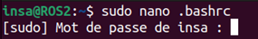
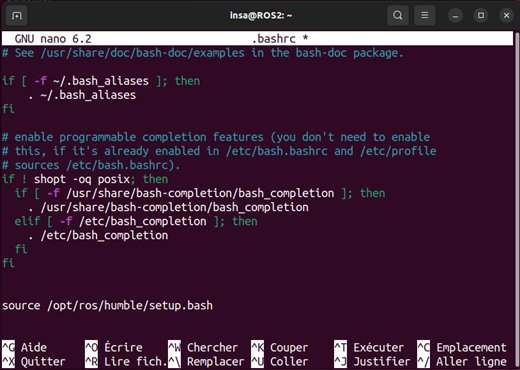

Tutoriel : Création de packages Python et C++
Table des matières
Introduction
Ce second tutoriel a pour but de comprendre plus en profondeur ce que sont les Publishers et les Subscribers.
Notamment, de mettre en place une communication entre un Publisher et un Subscriber en utilisant le langage de programmation Python et CMake (C++).
Nous allons donc d'abord nous intéresser à ce que sont Python et CMake.
-
Python : Python est un langage de programmation simple, utilisé pour le développement back-end d'applications web ou mobile, mais aussi pour développer des applications pour PC. En plus de cela, Python possède un grand nombre de bibliothèque qui rendent son utilisation applicable dans la plupart des domaines, ce qui comble le fait que le codage d'applications lourdes devient très vite difficile.
-
CMake : CMake est un système de construction logicielle multiplateforme. Il facilite grandement la création de projet, en vérifiant les prérequis nécessaires à leur création, et en déterminant les dépendances entre les différents composants d'un même projet.
On va alors pouvoir créer plusieurs packages qui servent à informer CMake des différentes dépendances, et ensuite utiliser des programmes écris avec un langage de programmation supporté par CMake (C++par exemple) dans chacun de ces packages. Cela, afin de créer un projet fonctionnel dont chaque partie est indépendamment géré par le système de construction. Il est alors plus facile de gérer et corriger des erreurs si elles apparaissent.
Créer un workspace ROS2
Un workspace est simplement un dossier qui contient des packages pour ROS2. Avant d'utiliser ROS2, vous devez sourcer les fichiers setup de ROS2 dans votre terminal. Cela se fait automatiquement car le fichier .bashrc contient les informations nécessaires. Cela rend les différentes fonctions de ros2 disponibles pour une utilisation dans ce terminal . Cette source de ROS2 agit comme un "underlay" qui permet d'utiliser les fonctionnalités de ROS2.
Vous pouvez aussi sourcer un "overlay" - un espace de travail supplémentaire où vous pouvez ajouter de nouveaux packages, que vous avez créés ou non, sans perturber votre espace de travail ROS2 actuel.
Votre sous-couche (l'overlay) doit contenir les dépendances de tous les packages de votre overlay.
Les packages de votre overlay auront la priorité sur ceux de la sous-couche (c'est à dire que si vous avez un package qui modifie TurtleSim dans votre workspace et que vous sourcez l'overlay ; si vous lancez
TurtleSim vous aurez alors sa version modifiée). Vous pouvez également avoir plusieurs couches de sous-couches et d'overlays, et chaque overlay suivant utilise les packages de ses sous-couches parentes.
Mise de la source dans fichier ~/.bashrc
Cette partie consiste à ce que la source de ROS2, "l'underlay" soit ajouté automatiquement pour chaque nouveau terminal que vous ouvrez. Pour ce faire suivez les instructions suivantes :
Ouvrez un terminal avec
ctrl+alt+T, puis modifier le fichier.bashrcavec la commande suivante puis tapez votre mot de passe :cd ~ sudo nano .bashrc
La ligne de commande à été expliquée dans le tutoriel : Noeuds, Topics, Services et Actions
Indiquer le chemin du fichier setup de ROS2. Voici la ligne de code que vous avez à mettre à la fin de ce fichier :
source /opt/ros/humble/setup.bash
Ajoutez le chemin du fichier setup de ROS2 à la fin de ce fichier et vous devriez obtenir :
Sauvegardez et quittez le fichier avec
ctrl+O,Entreret ensuitectrl+X.La source du fichier setup.bash de ROS2 correspond à l'underlay de notre espace de travail. Par la suite nous ajouterons un overlay pour pouvoir utiliser nos propres packages.
Créer le répertoire qui servira de workspace
La meilleure pratique consiste à créer un nouveau répertoire pour chaque nouveau workspace. Le nom n'a pas d'importance, mais il est utile qu'il indique son objectif. Choisissons le nom de répertoire ros2_ws, pour "espace de développement".
Créez votre premier workspace en tapant la commande suivante :
mkdir ~/ros2_ws/src/

Explication de la commande :
mkdir : permet de créer un répertoire
-p : paramètre de la fonction mkdir permettant de créer directement un sous répertoires à notre répertoire principal
~/ros2_ws/src : définit un chemin de répertoire et sous répertoire.
Donc la commande suivante permet de créer le répertoire de notre workspace ainsi qu'un sous répertoire
src:mkdir ~/ros2_ws/src/
Une autre bonne pratique consiste à placer tous les packages de votre espace de travail dans le répertoire
src.Déplacez vous dans le répertoire
srcde votre workspace. Pour ce faire tapez la commande :cd ~/ros2_ws/src/

-
Vous pouvez utiliser la commande
lspour voir les fichiers dans le sous-répertoiresrc.ls
Pour le moment, ce sous-répertoire est vide et cela est bien normal. C'est dans ce répertoire que vous allez créer prochainement des nouveaux packages.
-
Revenez dans la racine de votre workspace pour la suite du tutoriel (ie. revenez dans le répertoire
~/ros2_ws/).Vous avez le choix entre deux méthodes pour faire ceci avec la commande cd (
cd=> change directory):-
Première méthode (permet de chosir le chemin précis où vous souhaitez vous rendre) :
cd ~/ros2_ws/

-
Deuxième méthode (permet de revenir dans le répertoire parent de celui où vous êtes):
cd ..

-
-
Tapez la commande
lspour voir ce que contient votre workspace. Vous pourrez voir qu'il ne contient que votre sous répertoiresrcqui lui est vide pour le moment.
Construire votre workspace avec colcon
Ceci est un mini tutoriel sur la façon de construire un workspace ROS2 avec colcon. Un workspace ROS2 est
un répertoire avec une structure particulière. En général, il y a un sous-répertoire src (vous venez de le créer).
A l'intérieur de ce sous-répertoire se trouve le code source des différents packages.
Typiquement, le répertoire src commence par être vide (c'est votre cas !).
-
Depuis la racine de votre workspace (faites la commande
cd ~/ros2_ws/pour aller dans la racine), vous pouvez maintenant construire vos packages à l'aide de la commande colcon :cd ~/ros2_ws/ colcon build

-
Explication de colcon : colcon réalise la construction du workspace à partir des sources. Par défaut, il créera les répertoires suivants en tant que répertoire voisins de
src:Le répertoire build sera l'endroit où les fichiers intermédiaires seront stockés. Pour chaque package, un sous-dossier sera créé dans lequel, par exemple, CMake sera invoqué.
Le répertoire install est l'endroit où chaque package sera installé. Par défaut, chaque package est installé dans un sous-répertoire distinct.
Le répertoire log contient diverses informations de chacune des invocation de colcon.
-
Vous pouvez ensuite faire un
ls(en étant dans le répertoire du workspace~/ros2_ws/) pour voir que les répertoires build, install et log ont bien été créés dans la racine du workspace (à côté desrc):ls

Comprendre les packages (Python et CMake)
Un package est une unité d'organisation pour votre code ROS2. Si vous voulez pouvoir installer votre code ou le partager avec d'autres, vous aurez besoin de l'organiser dans un package. Avec les packages, vous pouvez publier votre travail ROS2 et permettre aux autres de le construire et de l'utiliser facilement.
ROS2 utilise "ament" comme système de construction de packages et "colcon" comme outil de construction de ces packages. Vous pouvez créer un package en utilisant CMake ou Python, qui sont officiellement supportés, bien que d'autres types de construction existent.
Les paquets ROS2 Python et CMake ont chacun leur propre contenu minimum requis :
-
Package Python
package.xml : fichier contenant des méta-informations sur le package
resource/<nom_du_package> : fichier marqueur pour le package
setup.cfg est nécessaire lorsqu'un package a des exécutables, afin que ros2 run puisse les trouver
setup.py contient les instructions pour l'installation du package
<nom_du_package> est un répertoire avec le même nom que votre package, utilisé par les outils de ROS2 pour trouver votre package, qui contient le fichier python
__init__.py
-
Package CMake
CMakelist.txt : fichier qui décrit comment construire le code dans le package
include/<nom_du_package> : le répertoire contenant les en-têtes publics du package
package.xml : fichier contenant des méta-informations sur le package
src : répertoire contenant le code source du package
Créer un package Python
Dans cette partie nous allons créer un package python qui permet d'écrire du texte dans un terminal.
Créer le package
-
Déplacez vous dans le répertoire
srcde votre workspace. Pour ce faire tapez la commande :cd ~/ros2_ws/src/
-
Observez la structure de la commande à taper pour créer un package :
ros2 pkg create --build-type ament_python <package_name>
Nous appellerons notre package
my_packageet nous utiliserons l'argument optionnel--node-namequi crée un simple exécutable (nommémy_node) de type Hello World dans le package. -
Entrez la commande suivante dans votre terminal :
ros2 pkg create --build-type ament_python --node-name my_node my_package

Après avoir exécuté la commande, votre terminal affichera le message suivant :

Vous aurez maintenant un nouveau dossier dans le répertoire
srcde votre espace de travail, appelémy_package. -
Vous pouvez utiliser la commande
lspour voir les fichiers dans le sous-répertoire src. Vous constaterez que votre package à bien été créé :
Construire le package
Le fait de placer les packages dans un workspace est particulièrement utile car vous pouvez ensuite construire plusieurs packages en même temps en lançant colcon build à la racine du workspace :
Retournez à la racine de votre espace de travail. Puis construisez votre package en reconstruisant tout votre workspace en tapant la commande :
cd ~/ros2_ws/ colcon build
Pour construire uniquement ce package et pas tout votre workspace, tapez la commande :
colcon build --packages-select my_package

Sourcer l'overlay de votre workspace
-
Votre package est donc construit et il peut donc être utilisé avec ROS2. Pour ce faire, nous devons mettre la source de l'overlay :
cd ~/ros2_ws/ source install/setup.bash

-
N'oubliez pas cette étape sinon la commande suivante ne fonctionnera pas car "l'overlay" n'est pas sourcé.
Tester votre premier package Python
-
Observez la structure de la commande permettant de lancer le package :
ros2 run <package_name> <node_name>
Dans notre cas, le package se nomme
my_package.<node_name>correspond à l'exécutable du package :my_node. Cet exécutable a été créé automatiquement lors de la création du package (à cause du paramètre--node-name my_node). -
Testez le package en tapant la commande :
ros2 run my_package my_node

Vous obtiendrez dans le terminal :

Vous pouvez voir que l'exécutable
my_nodedu package permet d'afficher du texte dans le terminal. -
Suivez les instructions suivantes, pour modifier la phrase retournée dans le terminal. Rendez-vous dans le répertoire
~/ros2_ws/src/my_package/my_package/:cd ~/ros2_ws/src/my_package/my_package/

Faites la commande
ls:
Le fichier
__init__.pyest un fichier créé automatiquement lors du build du package.
Le fichiermy_node.pyest l'exécutable qui a été créé automatiquement lors de la création du package. Cet exécutable est un code python servant, ici, à afficher du texte dans le terminal.
Modifier votre premier package Python
-
Ouvrez le fichier
my_node.pyavec le même type de commande que pour modifier le fichier.bashrc. Pour rappel, utilisez la fonction :sudo nano <nom_fichier>
Tapez la commande :
sudo nano my_node.py

Le code python
my_node.pyva s'ouvrir avec l'éditeur nano :
En observant le code, vous pouvez voir la présence d'une condition qui est toujours valide qui appelle la fonction
main(). Cette fonctionmain()contient la fonctionprint()qui affiche le texte sur le terminal. -
Modifiez la phrase présente dans la fonction
print().
Mettez par exemple :Bonjour, voici un test de my_package.def main(): print('Bonjour, voici un test de my_package.') if __name__ == '__main__': main()
Enregistrez le fichier ! À cette étape, vous avez besoin de reconstruire juste votre package et pas tout votre workspace.
-
Retournez dans la racine et tapez la commande :
cd ~/ros2_ws/ colcon build --packages-select my_package
-
Tapez la commande suivante et vérifiez que le texte affiché a bien été modifié lors de la construction de votre package :
ros2 run my_package my_node

Voilà, vous avez créé un package simple en python, permettant de créer un nœud
my_nodequi affiche une ligne de texte dans un terminal.
Créer un package avec CMake
Dans cette partie nous allons créer un package avec CMake qui permet d'écrire du texte dans un terminal.
Créer le package
-
Rendez-vous dans le répertoire
srcde votre workspace. Pour ce faire, tapez la commande :cd ~/ros2_ws/src/
-
Observez la structure de la commande à taper pour créer un package en CMake. Elle est similaire à celle pour le python :
ros2 pkg create --build-type ament_cmake <package_name>
Nous appellerons notre package
my_package2et nous utiliserons l'argument optionnel--node-namequi crée un simple exécutable (nommémy_node) de type Hello World dans le package. -
Entrez la commande suivante dans votre terminal, pour créer un package nommé
my_package2en CMake :ros2 pkg create --build-type ament_cmake --node-name my_node my_package2

Vous aurez maintenant un nouveau dossier dans le répertoire
srcde votre espace de travail appelémy_package2. -
Vous pouvez utiliser la commande
lspour voir les fichiers dans le sous-répertoiresrcde votre workspace. Vous constaterez que votre package a bien été créé.
Construire le package avec CMake
Le fait de placer les packages dans un workspace est particulièrement utile car vous pourrez ensuite construire plusieurs packages en même temps en lançant colcon build à la racine du workspace.
-
Retournez à la racine de votre espace de travail :
cd ~/ros2_ws/
-
Construisez votre package en reconstruisant uniquement,
my_package2, votre nouveau package :colcon build --packages-select my_package2

Si vous souhaitez faire la reconstruction de votre workspace entier, suivez les commandes
colcon build
Sourcer l'overlay de votre workspace
-
Votre package est donc construit et peut donc être utilisé avec ROS2. Pour ce faire, nous devons mettre la source de l'overlay :
cd ~/ros2_ws/ source install/setup.bash
-
N'oubliez pas cette étape sinon la commande suivante ne fonctionnera pas car vous n'aurez pas sourcé "l'overlay".
Tester votre premier package avec CMake
-
Observez la structure de la commande permettant de lancer votre package :
ros2 run <package_name> <node_name>
Dans notre cas, notre package se nomme
my_package2.<node_name>correspond à l'exécutable de notre package :my_node. Cet exécutable a été créé automatiquement lors de la création du package (à cause du paramètre--node-name my_node). -
Testez votre package en tapant la commande :
ros2 run my_package2 my_node

Vous obtiendrez dans le terminal :

Vous pouvez voir que l'exécutable
my_nodede votre package permet de faire afficher du texte dans le terminal comme le package en python. -
Suivez les instructions suivantes, pour modifier la phrase retournée dans le terminal. Rendez-vous dans le répertoire
~/ros2_ws/src/my_package2/src/:et faites ensuite la commandecd ~/ros2_ws/src/my_package2/src/
ls:
Le fichier
my_node.cppest l'exécutable qui a été créé automatiquement lors de la création du package. Cet exécutable est un code enC++servant, ici, à afficher du texte dans le terminal.Contrairement à un package Python, vous pouvez voir que la structure du package en CMake est différente de celle d'un package en Python.
Modifier votre premier package avec CMake
-
Ouvrez le fichier
my_node.cppavec le même type de commande que pour modifier le fichier.bashrc. Pour rappel, la fonction à utiliser est la suivante :sudo nano <nom_fichier>
Utilisez donc la commande :
sudo nano my_node.cpp

Le code
C++dans le fichiermy_node.cppva s'ouvrir avec l'éditeur nano :
Vous constaterez directement que le code est totalement différent d'un code Python. Ici, nous avons uniquement une fonction main qui contient la fonction
printf()avec la phrase (sous la forme d'un String) que vous avez pu voir dans votre terminal précédemment. -
Modifiez le texte présent dans la fonction
printf(). Mettez par exemple :
Sauvegardez avec
ctrl+O, puisEntreretctrl+X.A cette étape, vous avez besoin de reconstruire uniquement votre package et pas tout votre workspace.
-
Retournez dans la racine et tapez la commande :
cd ~/ros2_ws/ colcon build --packages-select my_package2
-
Tapez la commande suivante pour lancer votre package, et vérifiez que le texte affiché a été bien modifié lors de la construction de votre package :
ros2 run my_package2 my_node

Voilà, vous avez créé un package simple en CMake, permettant de créer un nœud
my_nodequi affiche une ligne de texte dans un terminal.
Créer un package publisher/subscriber avec CMake
Dans ce tutoriel, vous allez créer des nœuds qui se transmettent des informations sous la forme de messages de chaînes de caractères par l'intermédiaire d'un topic. L'exemple utilisé ici est un simple système "talker" et "listener" ; un nœud publie des données sur le topic et l'autre s'abonne au topic afin de recevoir ces données.
Créer le package
-
Rendez-vous dans le répertoire
srcde votre workspaceros2_ws/src.cd ~/ros2_ws/src/
-
Créez un package Python que vous nommerez
py_pubsubavec la commande suivante :ros2 pkg create --build-type ament_python --node-name py_pubsub_node py_pubsub

Après avoir lancé la commande, votre terminal vous renverra le message suivant :

Vous avez peut-être remarqué dans le message, après la création de votre package, que les champs description et licence contiennent des notes TODO. C'est parce que la description du package et la déclaration de licence ne sont pas automatiquement définies, mais sont nécessaires si vous souhaitez publier votre package. Dans ce tutoriel, vous allez aussi apprendre à modifier ces informations.
-
Utilisez la commande
lspour voir les fichiers dans le sous-répertoiresrc. Vous constaterez que votre packagepy_pubsuba bien été créé. -
Nous devons maintenant écrire les nœuds correspondants au publisher et au subscriber dans le répertoire
~/ros2_ws/src/py_pubsub/py_pubsub/
Créer le noeud publisher
-
Rendez-vous dans le répertoire
~/ros2_ws/src/py_pubsub/py_pubsub/:cd ~/ros2_ws/src/py_pubsub/py_pubsub/

-
Créez un fichier
publisher_member_function.pyavec la commande :sudo nano publisher_member_function.py

-
Ecrivez les lignes suivantes dans le fichier que l'éditeur a ouvert (Vous trouverez ce code en Annexe 1):

Faites attention à l'indentation que vous utilisez dans votre code : Utilisez soit des espaces soit des tabulations mais pas les deux dans le même code.
Faites attention à
__init__qui contient 2 underscores avant et après le init. Pareil pour__name__et__main__.Sauvegardez avec
ctrl+O, puisEntreretctrl+X.
Explication du code du publisher
-
Les premières lignes de code permettent d'importer rclpy pour que la classe
Nodepuisse être utilisée :
La déclaration suivante importe le type de message intégré que le nœud utilisera pour structurer les données qu'il transmettra au topic. Soit, des messages de type
String:
Ces lignes représentent les dépendances du nœud. Rappelez-vous que les dépendances doivent être ajoutées au fichier
package.xml, ce que vous ferez dans la section suivante. -
Ensuite, la classe
MinimalPublisherest créée, qui hérite de (ou est une sous-classe de)Node:
-
Voici, ci-dessous, le constructeur de la classe. La fonction
super().__init__appelle le constructeur de la classeNodeet lui donne le nom de notre nœud, dans ce cas "minimal_publisher".create_publisherdéclare que le nœud publie des messages de typeString(importé du modulestd_msgs.msg), sur un topic nommé "topic", et que la "taille de la file d'attente" est de 10. La taille de la file d'attente est un paramètre de QoS (qualité de service) requis qui limite le nombre de messages mis en file d'attente si un subscriber ne les reçoit pas assez rapidement.Ensuite, un timer est créé avec un callback à exécuter toutes les 0.5 secondes.
self.iest un compteur utilisé dans le callback :
-
timer_callbackcréé un message avec la valeur du compteur en annexe, et le publie sur le terminal avec la fonctionget_logger().info().
-
Enfin, la fonction principale,
main(), est définie :
La bibliothèque
rclpyest d'abord initialisée, puis le nœud est créé avec la classMinimalPublisher(), et enfin le code fait "spin" le nœud pour que ses callbacks soient appelés toutes les 0.5s.
Créer le noeud subscriber
-
Rendez-vous dans le répertoire
~/ros2_ws/src/py_pubsub/py_pubsub/et créez un fichiersubscriber_member_function.pyavec la commandesudo nano:cd ~/ros2_ws/src/py_pubsub/py_pubsub/ sudo nano subscriber_member_function.py
-
Ecrivez les lignes suivantes dans le fichier que l'éditeur a ouvert (Vous trouverez ce code en Annexe 2) :

Faites attention à l'indentation que vous utilisez dans votre code : Utilisez soit des espaces soit des tabulations mais pas les deux dans le même code.
Faites attention à
__init__qui contient 2 underscores avant et après le init. Pareil pour__name__et__main__.Sauvegardez avec
ctrl+O, puisEntreretctrl+X.
Explication du code du subscriber
-
Le code du nœud subscriber est presque identique à celui du publisher. Le constructeur crée un subscriber avec les mêmes arguments que le publisher. Rappelons que le nom du topic et aussi le type de message utilisés par le publisher et le subscriber doivent correspondre pour qu'ils puissent communiquer.

-
Le constructeur et le callback du subscriber n'incluent pas de définition de timer, car il n'en a pas besoin. Son callback est appelé dès qu'il reçoit un message.
La définition du callback imprime simplement un message d'information sur la console, avec les données qu'il a reçues. Rappelons que le publisher définit :
msg.data = 'Hello World : \%d' \% self.i:
-
La définition principale
main()est presque exactement la même, remplaçant la création et lespindu publisher par celui du subscriber.Voilà, vous venez de créer deux nœuds (un publisher et un subscriber) dans le même package (
py_pubsub) !
Ajouter les dépendances pour le publisher
Dans cette section, nous allons ajouter des dépendances comme la description de notre package, l'email de contact, votre nom, et une licence.
-
Rendez-vous dans le répertoire
~/ros2_ws/src/py_pubsub/:cd ~/ros2_ws/src/py_pubsub/
-
Faites
lspour voir la liste des fichiers et répertoires disponibles dans votre packagepy_pubsub:
Vous pouvez voir que les différents fichiers d'un package python sont présents. Dans notre cas, nous allons commencer par modifier le fichier
package.xml. -
Ouvrez le fichier
package.xmlavec la commandesudo nanoet modifiez les lignes<description>,<maintainer>, et<license>avec vos informations personnelles :sudo nano package.xml

A la suite de ces lignes, ajoutez les dépendances correspondantes aux imports de notre nœud publisher :

Votre fichier
package.xmldevrait ressembler à ceci :
Sauvegardez le fichier !
-
Modifiez ensuite le fichier
setup.pyavec la commandesudo nano:sudo nano setup.py
-
Faites correspondre les champs
maintainer,maintainer_email,description, etlicenseavec ceux du fichierpackage.xml(modifié précédemment). -
Ajoutez un point d'entrée pour le nœud publisher entre les crochets de
'console_script': []. Pour ce faire, ajoutez la ligne suivante, entre les crochets de'console_script': []:'talker = py_pubsub.publisher_member_function:main',
N'oubliez pas la virgule à la fin de cette ligne. Votre fichier setup.py devrait être identique à celui ci-dessous :

Sauvegardez le fichier !
-
Vérifiez que le fichier
setup.cfga bien été créé correctement.- Ouvrez le fichier
setup.cfg - Vous devriez obtenir :

Il s'agit simplement d'indiquer à setuptools de placer vos exécutables dans lib, car la fonction run de ROS2 les cherchera à cet emplacement.
- Ouvrez le fichier
- Toutes les dépendances du publisher ont été ajoutées. Passons aux dépendances du subscriber.
Ajouter les dépendances pour le subscriber
Les fichiers modifiés précédemment sont les mêmes pour nos deux nœuds (publisher et subscriber).
-
Comme les dépendances correspondantes aux imports de nos 2 nœuds sont identiques (
rclpyetstd_msgs), nous avons uniquement besoin de modifier le fichiersetup.pyen ajoutant un point d'entrée pour le subscriber. -
Ajoutez la ligne
'listener = py_pubsub.subscriber_member_function:main', entre les crochets de'console_script'et après la ligne d'entrée du publisher.'listener = py_pubsub.subscriber_member_function:main'
-
Vous devriez obtenir :

Sauvegardez le fichier !
-
Toutes les dépendances ont été mises dans les différents fichiers. Passons à la construction du package
py_pubsubcontenant les 2 nœuds.
Construction du package
-
Revenez dans la racine de votre workspace :
cd ~/ros2_ws/
-
Avant de construire votre package, lancez une fonction qui permet de télécharger les librairies des différentes dépendances que vous avez utilisées dans vos différents packages et qui ne sont pas encore téléchargées. La procédure se décompose en 3 étapes :
-
Tapez la commande suivante :
rosdep init
Il est possible que cela prenne plusieurs minutes ! À la fin, un message vous avertira qu'il est préférable de taper la commande suivante.
En cas de message d'erreur, cela vient probablement du fait que cette commande à déjà été utilisée. Passez à la suivante ! -
Faire la mise à jour des dépendances :
rosdep update
Il est possible que cela prenne plusieurs minutes !
-
Tapez une commande pour faire une vérification des dépendances :
rosdep check --from-paths src --ignore-src --rosdistro $ROS_DISTRO
Utiliser ces 3 commandes est une bonne habitude à prendre, car vous risquez d'avoir des packages "buggés" qui se construiront correctement mais qui seront inutilisables en cas de dépendance manquante !
-
-
Construisez votre package uniquement et pas tout votre workspace en tapant la commande :
colcon build py_pubsub
-
Faites un
lspour vérifier que votre packagepy_pubsubse trouve bien dans le répertoire~/ros2_ws/src/cd ~/ros2_ws/src/ ls
Sourcer l'overlay de votre workspace
-
Votre package est donc construit et peut donc être utilisé avec ROS2. Avant de mettre à source de l'overlay dans un nouveau terminal, rendez-vous à la racine de votre workspace :
cd ~/ros2_ws/ source install/setup.bash
-
N'oubliez pas cette étape sinon la commande suivante ne fonctionnera pas car "l'overlay" ne sera pas sourcé !.
Tester votre package Python
-
Dans notre cas, notre package se nomme
py_pubsub. Il contient les exécutablespublisher_member_function.pyetsubscriber_member_function.py. Cependant, les nœuds se nommenttalkeretlistener. Ces noms viennent directement du fichiersetup.pyet des noms des points d'entrée de notre packagepy_pubsub:
-
Testez le publisher, nommé
talker, de votre package en tapant la commande suivante dans le premier terminal :ros2 run py_pubsub talker

Vous obtiendrez dans le terminal :

Vous pouvez voir que le nœud
talkerde votre package permet d'afficher du texte dans le terminal à un intervalle régulier de 0.5s. -
Ouvrez un deuxième terminal et allez dans la racine de votre workspace (
cd ~/ros2_ws/). Tapez ensuite la commande pour mettre la source de l'overlay dans le terminal. Puis, tapez la commande pour lancer le subscriber, nommélistener:cd ~/ros2_ws/ source install/setup.bash ros2 run py_pubsub listener

Vous obtiendrez dans le troisième terminal :

-
Vous avez créé deux nœuds.Un pour publier et l'autre pour souscrire à ces données sur un topic. Avant de les exécuter, vous avez ajouté leurs dépendances et leurs points d'entrée aux fichiers de configuration du package.
Visualiser les deux noeuds et le topic de votre package
-
Visualisez vos deux nœuds communiquer via un topic grâce à rqt_graph.
Ouvrez un troisième terminal et tapez la commande pour ouvrir rqt_graph. (Rappel de la commande :
$ rqt_graph) -
Vous obtiendrez le graphe suivant dans rqt_graph :

Le nom des deux noeuds provient directement de leur code
setup.pyrespectif. Les noeuds ont été créés avec la fonctionsuper().__init__('minimal_publisher')etsuper().__init__('minimal_subscriber')Le nom du topic provient directement de la fonction
self.publisher_ = self.create_publisher(String, 'topic', 10)qui signifie qu'un topic 'topic' va être crée pour des messages de type String et que le noeudminimal_publisherva publier des données dessus.
Et la fonctionself.subscription = self.create_subscription(String,'topic', self.listener_callback, 10)signifie que l noeud minimal_subscriber va s'abonner au topic 'topic'.
Vous savez maintenant créer plusieurs nœuds dans un seul package Python. Pour le faire en CMake, la méthode est similaire (langage en C++ et structure différentes), mais nous ne la traiterons pas ici.
Créer un package pour faire bouger une tortue de TurtleSim
Dans cette partie nous allons créer un package python qui permet de faire bouger une tortue de TurtleSim. Nous commencerons pas la création du package.
Créer le package en Python
-
Déplacez-vous dans le répertoire
srcde votre workspace. Pour ce faire, tapez la commande :cd ~/ros2_ws/src/
Nous appellerons notre package :
my_turtle_controller. -
Entrez, donc, la commande suivante dans votre terminal :
ros2 pkg create --build-type ament_python my_turtle_controller

Vous aurez maintenant un nouveau dossier dans le répertoire
srcde votre espace de travail appelémy_turtle_controller. -
Vérifiez que ce package a bien été créé, en utilisant la commande
lsdans le sous-répertoiresrc:cd ~/ros2_ws/src/ ls
Vous constaterez que votre package a bien été créé.
Créer l'éxecutable python dans le package
Dans cette partie, nous allons créer le fichier Python qui sera un exécutable du package. Le code de ce fichier permettra de publier des messages de type geometry_msgs_msg_Twist sur le topic /turtle1/cmd_vel de TurtleSim. C'est-à-dire que nous allons publier des messages contenant des vitesses linéaires et angulaires sur le topic /turtle1/cmd_vel, mais cette fois-ci en utilisant Python dans le but que la tortue bouge en forme de cercle.
-
Rendez-vous dans le répertoire
~ros2_ws/src/my_turtle_controller/my_turtle_controller.cd ~/ros2_ws/src/my_turtle_controller/my_turtle_controller
Créez un fichier que nous nommerons
draw_circle.py:sudo nano draw_circle.py

-
Écrivez le code suivant dans la fenêtre de l'éditeur de texte (Vous trouverez ce script en Annexe 3) :

Comme vous le constatez peut-être, ce code ressemble fortement au code du publisher du précédent tutoriel. La seule différence est que les messages transmis sont ici du type
geometry_msgs/msg/Twist(une structure sous la forme de deux vecteurs, l'un pour les vitesses linéaires et l'autre pour les vitesses angulaires).Faites attention à l'indentation que vous utilisez dans votre code : utilisez soit des espaces, soit des tabulations, mais pas les deux dans le même code.
Faites attention à__init__qui contient 2 underscores avant et après leinit. Pareil pour__name__et__main__.Sauvegardez avec
ctrl+O, puisEntreretctrl+X.
Explication du code du publisher
-
Les premières lignes de code après les commentaires permettent d'importer
rclpypour que sa classe Node puisse être utilisée :
La déclaration suivante importe le type de message Twist que le nœud utilise pour structurer les données qu'il transmet au topic
/turtle1/cmd_vel:
-
Ensuite, la classe DrawCircleNode est créée et hérite de Node :

-
Voici, ci-dessous, le constructeur de la classe. La fonction
super().__init__appelle le constructeur de la classe Node et lui donne le nom de votre nœud, dans ce cas "draw_circle".create_publisherdéclare que le nœud publie des messages de type Twist (importé du modulegeometry_msgs.msg), sur le topic nommé/turtle1/cmd_velde TurtleSim, et que la "taille de la file d'attente" est de 10. La taille de la file d'attente est un paramètre de QoS (qualité de service) requis qui limite le nombre de messages mis en file d'attente si un subscriber ne les reçoit pas assez rapidement.Ensuite, un timer est créé avec un callback à exécuter toutes les 0.5 secondes :
.png)
-
send_velocity_commandcréée un message du type Twist et assigne une valeur pour la vitesses linéaire x et la vitesse angulaire z. (Rappel : la tortue se trouvant dans un espace de déplacement 2D, elle ne peut bouger linéairement que sur x et y, et angulairement uniquement sur z).Ensuite, il y a la présence de la fonction qui publie le message Twist :

-
Enfin, la fonction principale,
main(), est définie :
La bibliothèque rclpy est d'abord initialisée, puis le nœud est créé avec la classe
DrawCircleNode(), et enfin le code faitspinle nœud pour que la fonctionsend_velocity_commandsoit appelée toutes les 0.5s.
Modifier les points d'entrée de votre package
-
Rendez-vous dans le répertoire
~/ros2_ws/src/my_turtle_controller/cd ~/ros2_ws/src/my_turtle_controller/
-
Ouvrez avec l'éditeur nano, le fichier "setup.py". Modifier ensuite la section entry-point comme suit :
sudo nano setup.py
-
Ajoutez cette ligne de code entre les crochets de
'console_scripts':"draw_circle = my_turtle_controller.draw_circle:main"

Construire le package et sourcer l'overlay
-
Retournez à la racine de votre espace de travail avec la commande
cd ~/ros2_ws/:cd ~/ros2_ws/
-
Faites la vérification des dépendances avec les commandes suivantes :
rosdep init
rosdep update
rosdep install -i --from-path src --rosdistro humble -y
-
Construisez votre package en reconstruisant tout votre workspace en tapant la commande :
colcon build
-
Votre package est construit et peut donc être utilisé avec ROS2. Pour ce faire nous devons mettre la source de l'overlay :
source install/local_setup.bash
-
N'oubliez pas cette étape sinon la commande suivante ne fonctionnera pas car vous n'aurez pas sourcé votre "overlay".
Tester votre package Python
-
Souvenez-vous de la structure de la commande permettant de lancer votre package :
ros2 run <package_name> <node_name>
Dans notre cas, notre package se nomme
my_turtle_controller.<node_name>correspond au nom du nœud de l'exécutable de notre package :draw_circle. -
Ouvrez TurtleSim avant de lancer votre package :
ros2 run turtlesim turtlesim_node

-
Testez votre package en tapant la commande :
ros2 run my_turtle_controller draw_circle

Vous pourrez voir que la tortue commencera à bouger sous la forme d'un cercle dans TurtleSim :

Le tutoriel Création de packages Python et C++ est fini. Vous avez maintenant les bases pour créer vos propres packages sur ROS2 !
Annexes
Annexe 1 : Script python "publisher_member_function.py"
Revenez au bon endroit dans le tuto !
import rclpy
from rclpy.node import Node
from std_msgs.msg import String
class MinimalPublisher(Node):
def __init__(self):
super().__init__('minimal_publisher')
self.publisher_ = self.create_publisher(String, 'topic', 10)
timer_period = 0.5 # seconds
self.timer = self.create_timer(timer_period, self.timer_callback)
self.i = 0
def timer_callback(self):
msg = String()
msg.data = 'Hello World: %d' % self.i
self.publisher_.publish(msg)
self.get_logger().info('Publishing: "%s"' % msg.data)
self.i += 1
def main(args=None):
rclpy.init(args=args)
minimal_publisher = MinimalPublisher()
rclpy.spin(minimal_publisher)
# Destroy the node explicitly
# (optional - otherwise it will be done automatically
# when the garbage collector destroys the node object)
minimal_publisher.destroy_node()
rclpy.shutdown()
if __name__ == '__main__':
main()
Annexe 2 : Script python "subscriber_member_function.py"
Revenez au bon endroit dans le tuto !
import rclpy
from rclpy.node import Node
from std_msgs.msg import String
class MinimalSubscriber(Node):
def __init__(self):
super().__init__('minimal_subscriber')
self.subscription = self.create_subscription(String,'topic', self.listener_callback, 10)
self.subscription # prevent unused variable warning
def listener_callback(self, msg):
self.get_logger().info('I heard: "%s"' % msg.data)
def main(args=None):
rclpy.init(args=args)
minimal_subscriber = MinimalSubscriber()
rclpy.spin(minimal_subscriber)
# Destroy the node explicitly
# (optional - otherwise it will be done automatically
# when the garbage collector destroys the node object)
minimal_subscriber.destroy_node()
rclpy.shutdown()
if __name__ == '__main__':
main()
Annexe 3 : Script python "draw_circle.py"
Revenez au bon endroit dans le tuto !
import rclpy
from rclpy.node import Node
from geometry_msgs.msg import Twist
class DrawCircleNode(Node):
def __init__(self):
super().__init__('draw_circle')
self.cmd_vel_pub_ = self.create_publisher(Twist, "/turtle1/cmd_vel", 10)
timer_period = 0.5 # seconds
self.timer = self.create_timer(timer_period, self.send_velocity_command)
self.get_logger().info("Draw circle node has been started")
def send_velocity_command(self):
msg = Twist()
msg.linear.x = 2.0
#msg.linear.y = 1.0
msg.angular.z = 1.0
self.cmd_vel_pub_.publish(msg)
def main(args=None):
rclpy.init(args=args)
node = DrawCircleNode()
rclpy.spin(node)
rclpy.shutdown()